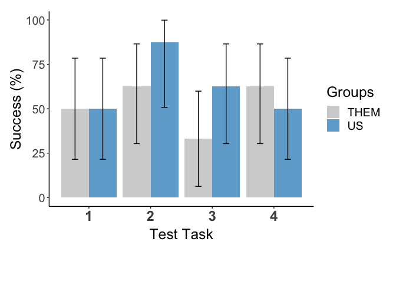

The functions in this package compute success rates and confidence intervals following Jeff Sauro’s excellent write up on MeasuringU, Lewis and Sauro (2006), and this page by Tom Tullis, which includes a downloadable Excel spreadsheet for computing the Adjusted Walk Confidence Interval.
Lewis and Sauro (2006, p. 144) offer several recommendations:
Always compute a confidence interval, as it is more informative than a point estimate. For most usability work, we recommend a 95% adjusted-Wald interval (Sauro & Lewis, 2005).
If you conduct usability tests in which your task completion rates typically take a wide range of values, uniformly distributed between 0 and 1, then you should use the LaPlace method. The smaller your sample size and the farther your initial estimate of p is from .5, the more you will improve your estimate of p.
The equation for the Adjusted-Wald confidence interval is given in (1)
\[\hat{p}_{adj} \pm z_{\alpha} \times \sqrt{\frac{\hat{p}_{adj}(1-\hat{p}_{adj})}{n_{adj}}}\]
\(n\) = total trials
\(\hat{p}\) = proportion of success trials
\(z_{\alpha}\) = the desired critical z-value (defaulting to 1.96 in the success_rate() function of this package)
\(\hat{p}_{adj} = \left(\frac{(n \times \hat{p} + z_{\alpha}^2/2)}{n + z_{\alpha}^2} \right)\)
\(n_{adj} = n + z_{\alpha}^2\)
In addition to the Wilson method, which is used in computing the Adjusted-Wald binomial confidence interval, Lewis and Sauro (2006) also describe the use of the Laplace and Maximum Likelihood Estimate (MLE) for point estimation.
The equation for the Laplace method is given in (2)
\(x\) = the observed number of success trials
\(n\) = the total number of trials
The equation for the Maximum Likelihood Estimate method is given in (3)
\(x\) = the observed number of success trials
\(n\) = the total number of trials
Install and load the UserTests package and some other packages.
#install.packages("tidyverse", repos = "http://cran.us.r-project.org" )
#install.packages("devtools", repos = "http://cran.us.r-project.org")
#devtools::install_github(repo = "darrellpenta/UserTests")
library(tidyverse) #For importing and exporting data, wrangling data, making figures
library(devtools) #For installing the UserTests package from GitHub
library(UserTests)If you just want to run analyses on a single task for which you know the success rate and the number of trials, provide that information to the UserTests::success_rate function, as below.
mydata <-
success_rate(.success=7, .trials=17)
mydata## successes trials orig.succ.pct estimator success.pct low.ci.pct
## 1 7 17 41.18 Wilson 42.8 21.56
## hi.ci.pct
## 1 64.05The results returned indicate:
Start by properly preparing your data file, which should be saved in.csv format. The data file should have either 3 or 4 columns, depending upon whether one or two test groups are being analyzed.
In both cases, three of the columns should be: Participant (numeric value), Task (numeric value), and Success (numeric value, coded as 1=success, 0=failure). The fourth (optional) column should be Group (character/text value). See table 1:
Table 1. Example task completion data set
| Participant | Task | Success | Group |
|---|---|---|---|
| 1 | 1 | 1 | US |
| 1 | 1 | 0 | THEM |
| 1 | 2 | 1 | US |
| 1 | 2 | 1 | THEM |
| 2 | 1 | 1 | US |
| 2 | 1 | 0 | THEM |
| 2 | 2 | 0 | US |
| 2 | 2 | 1 | THEM |
| … | … | … | … |
Next, import the .csv file into R using the readr package.
mydata<-
readr::read_csv("sample data/sample_data_2.csv")## Parsed with column specification:
## cols(
## Group = col_character(),
## Participant = col_integer(),
## Task = col_integer(),
## Success = col_integer()
## )head(mydata)## # A tibble: 6 x 4
## Group Participant Task Success
## <chr> <int> <int> <int>
## 1 US 1 1 0
## 2 US 1 2 1
## 3 US 1 3 0
## 4 US 1 4 1
## 5 US 2 1 1
## 6 US 2 2 1Run the success_rate function on your data set to view a table of summarized data. The head function in the code below is a convenient way to view the first few rows of data.
mytable<-
success_rate(mydata)
head(mytable)## # A tibble: 6 x 9
## # Groups: Task, Group [6]
## Task Group successes trials orig.succ.pct estimator success.pct
## <int> <chr> <int> <int> <dbl> <chr> <dbl>
## 1 1 THEM 4 8 50 MLE 50
## 2 1 US 4 8 50 MLE 50
## 3 2 THEM 5 8 62.5 MLE 62.5
## 4 2 US 7 8 87.5 MLE 87.5
## 5 3 THEM 2 8 25 Wilson 33.1
## 6 3 US 5 8 62.5 MLE 62.5
## # ... with 2 more variables: low.ci.pct <dbl>, hi.ci.pct <dbl>You can export the table as a .csv file. Just include the path to the location where you want to save the file to the path argument in the write_csv function, as in the example below.
readr::write_csv(mytable, path = "..\MyDesktop\MyUsabilityStudy\completion-rates.csv")If you need a figure, use the comp_figure function. You can overwrite the default labels by providing your own to the appropriate arguments in the function.
myfigure <-
success_rate_fig(mytable, xlabel="Test Task", ylabel = "Success (%)", legend_lab="Groups")
myfigure
To save the figure, provide the output format and path. The easiest way is to combine both of these in one string. Acceptable file formats include:
ggsave("../MyDesktop/usability-test-figure.png")Visit my website, darrelljpenta.com or email me
Copyright © 2018 DarrellJPenta